Planning Context
어떤 기획이었나
- 글로벌 서비스는 같은 기능이라도 언어 길이, 국가별 용어, 현지화 에셋, 번역 적용 방식에 따라 UI 문제가 발생합니다.
- 국가별 서비스 대응에서는 기능 자체보다 UI가 여러 언어와 운영 조건에서 깨지지 않는지가 중요합니다.
L2R · Global Service
여러 국가 서비스를 위한 번역, 다국어, 현지화 에셋, 국가별 언어 설정, UI 폴리싱 대응을 주로 수행한 사례입니다.

Planning Context
Process
Deliverables
Result
여러 국가 서비스에서 UI와 번역/현지화 적용이 어긋나는 지점을 찾아 개선 대응했습니다.
Deliverable Captures
원본 문서는 포함하지 않고, 포트폴리오 확인용으로 일부 페이지만 이미지화했습니다. 슬라이드 마스터/상하단 영역은 흐림 처리했습니다.
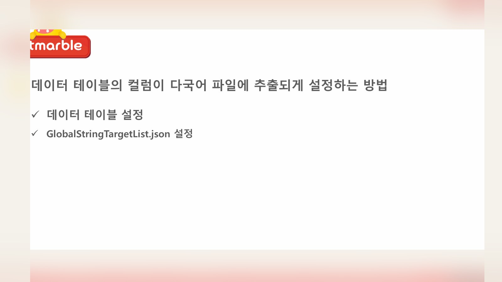
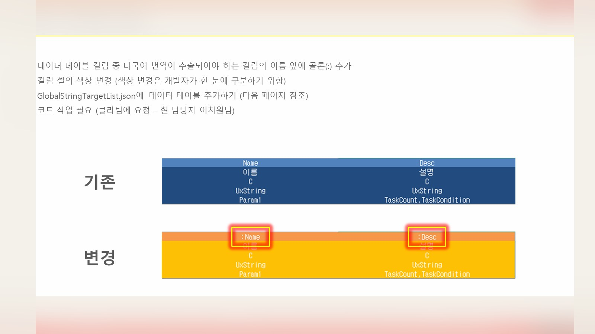
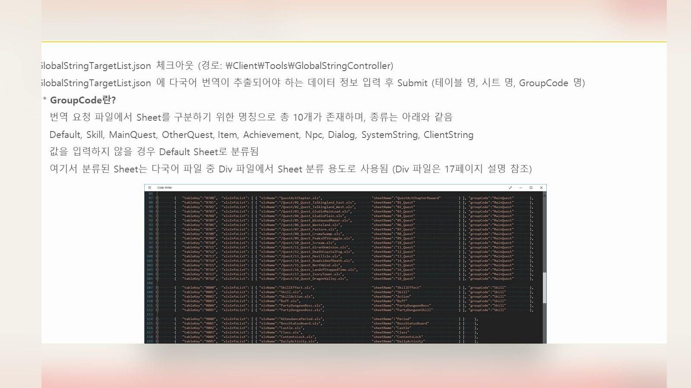
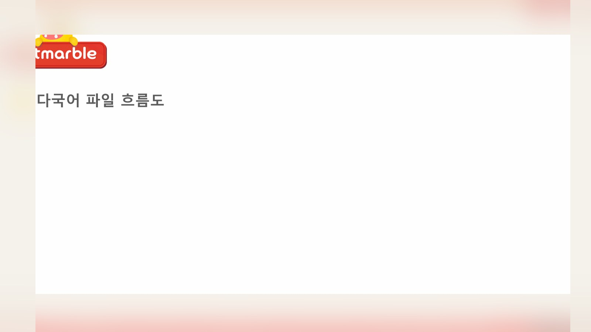
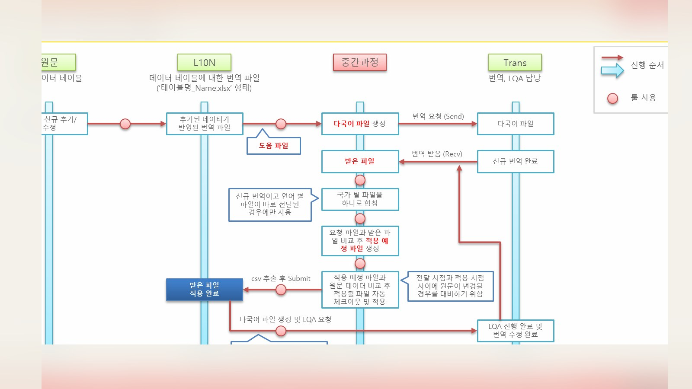
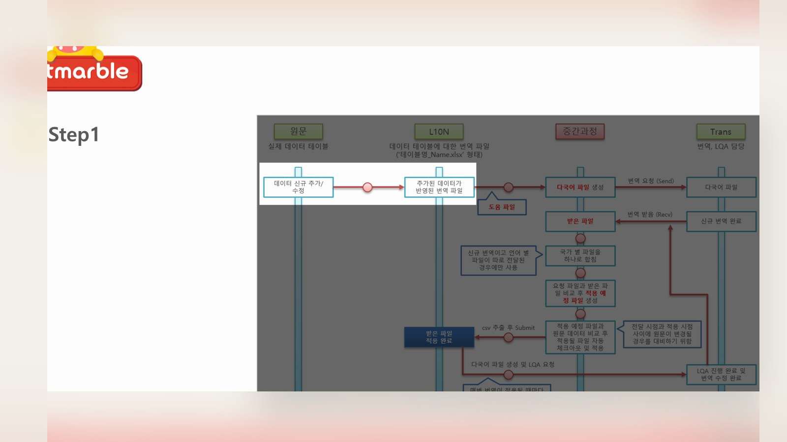
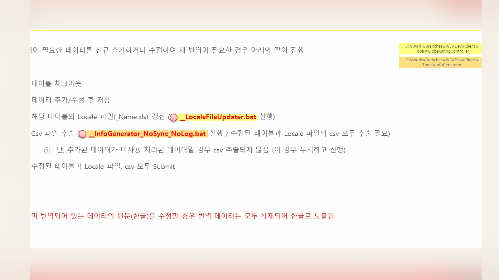
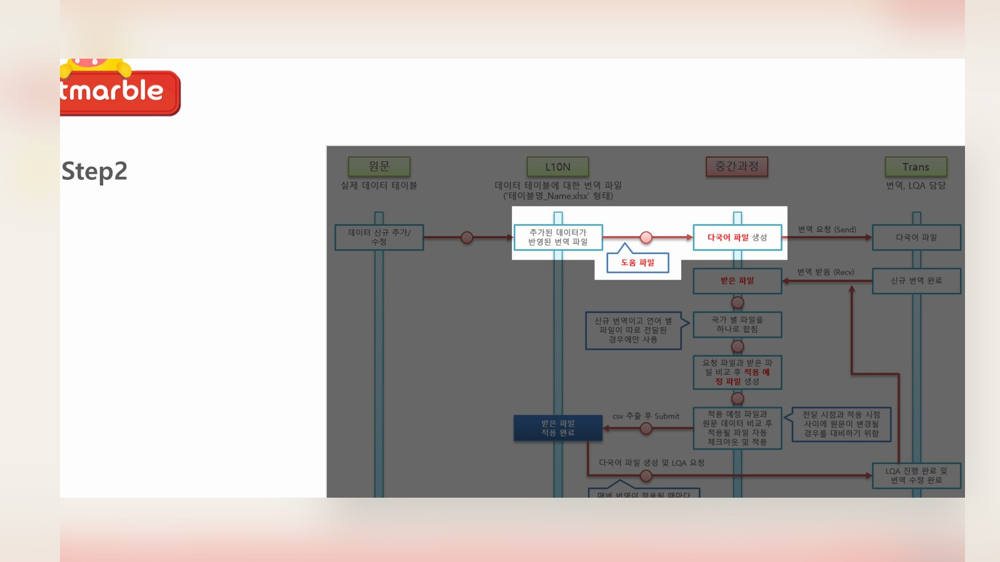
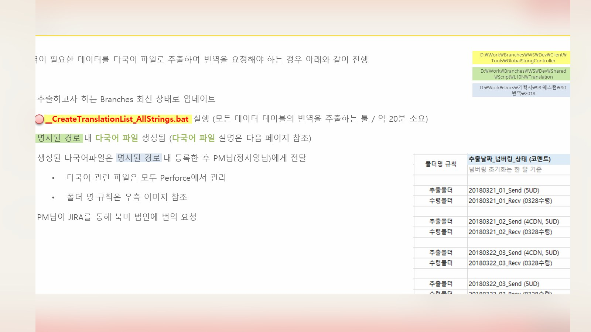
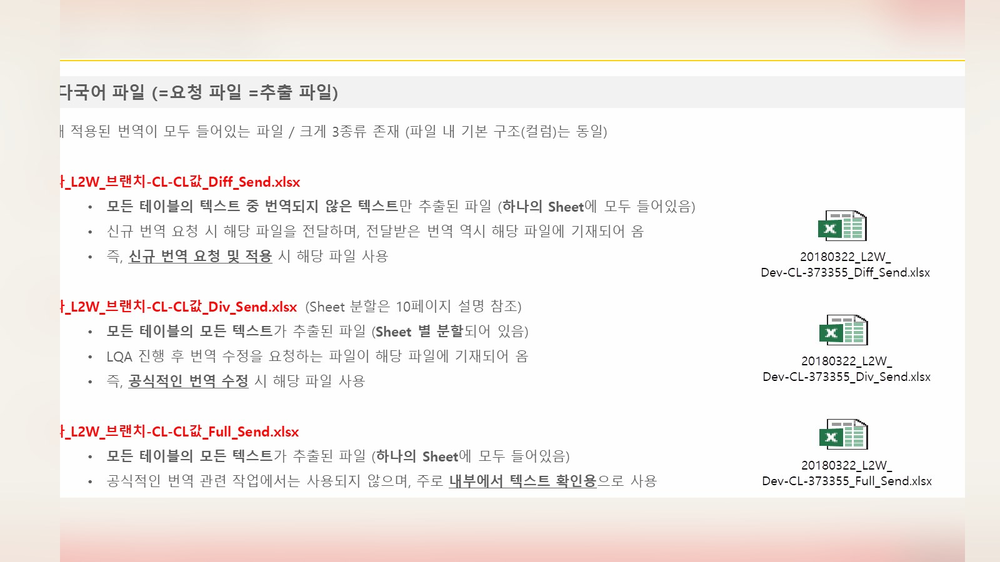
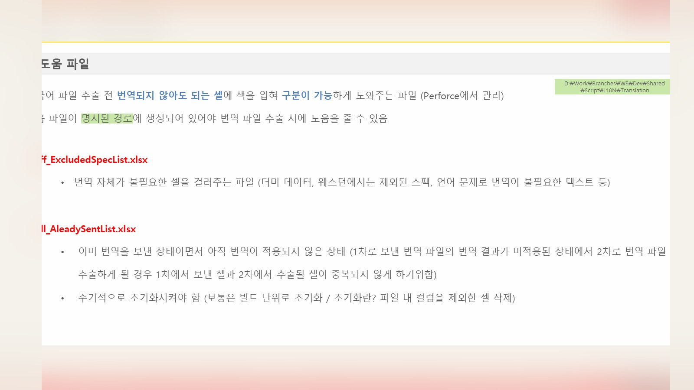
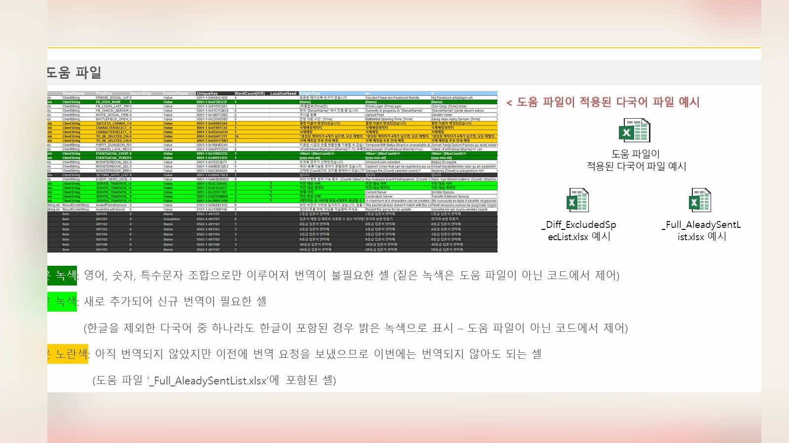